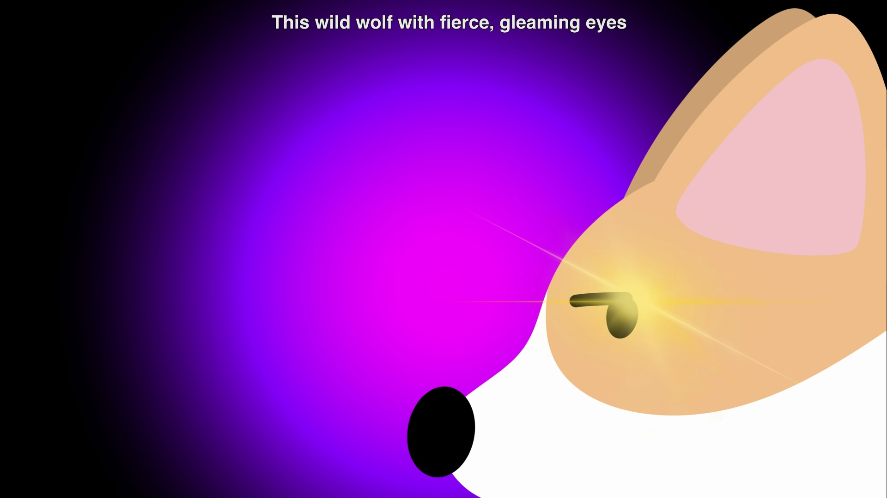
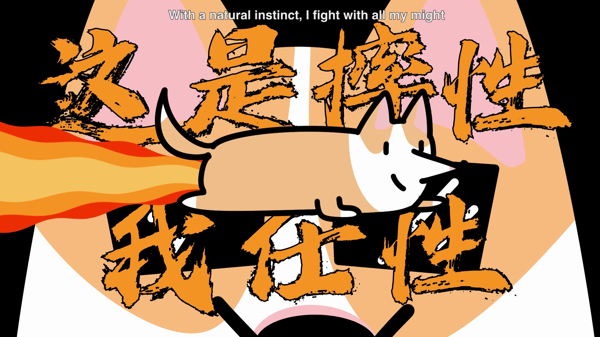
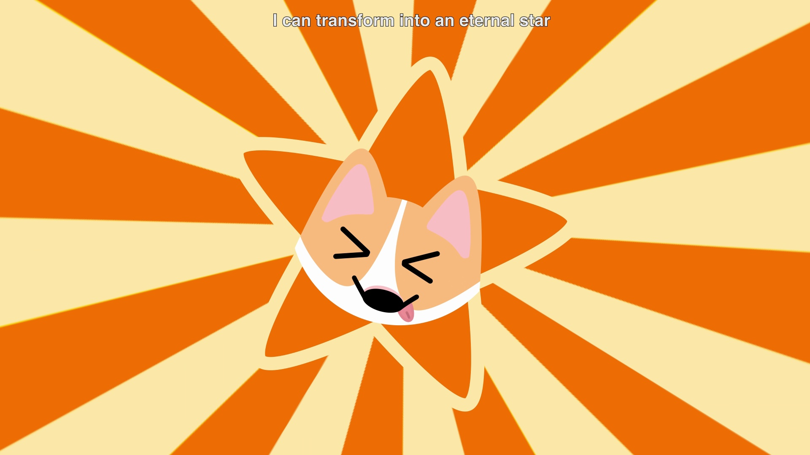
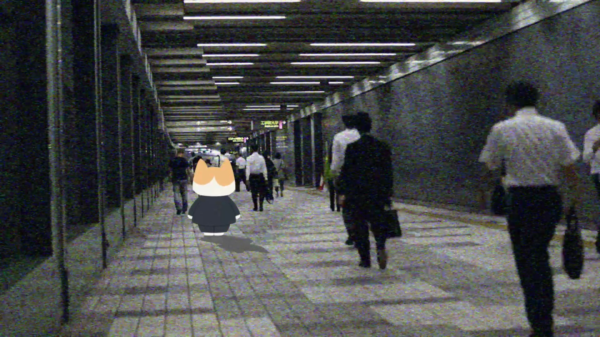
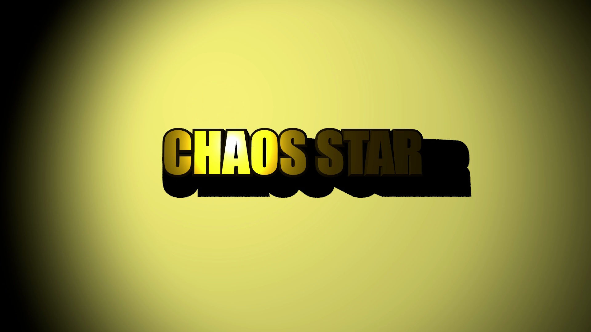
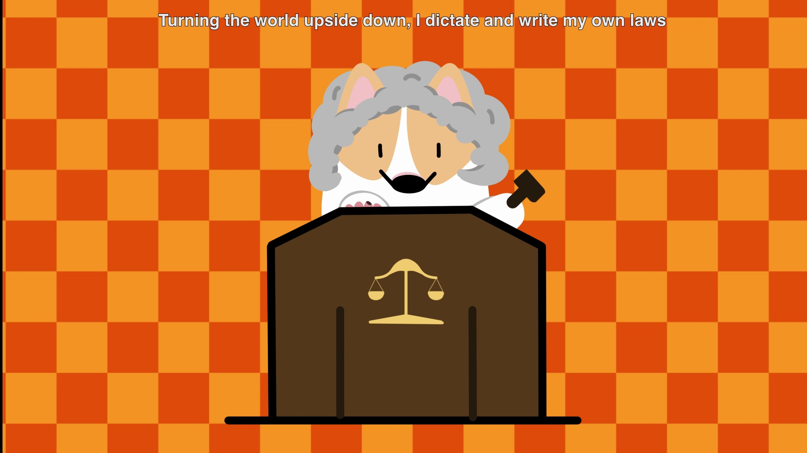
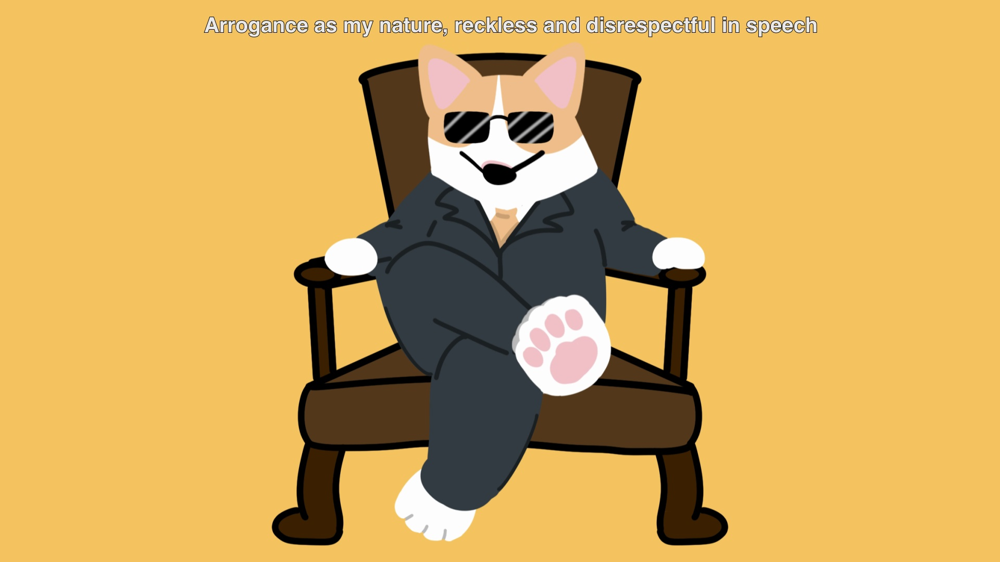
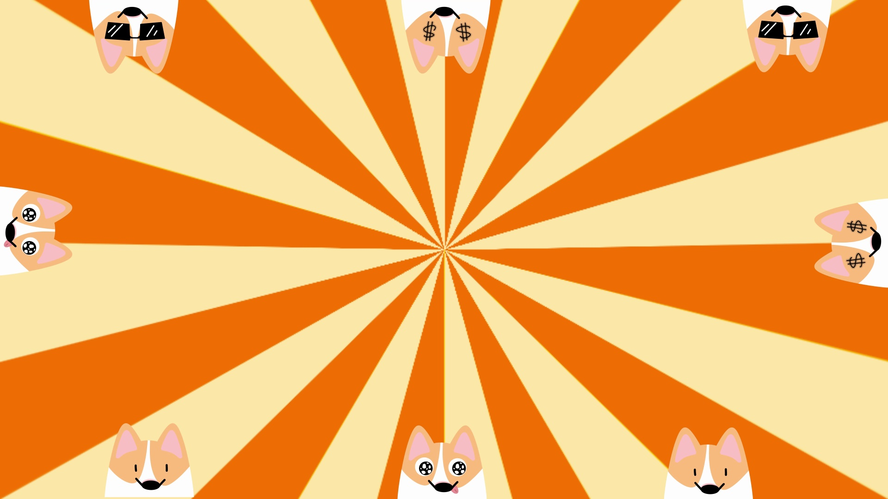
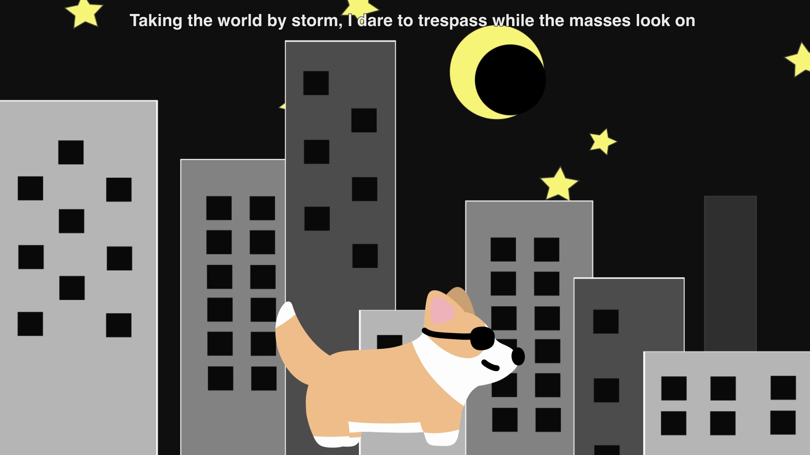

MV Remake — Chaos Star
翻拍自粤语经典金曲《乱世巨星》的手绘动画MV。一只手绘的柯基在法官、总裁、猛兽、夜行者、巨星五种人设间不断切换，用最直白的画面演绎歌词里"在乱世称王"的姿态。
A hand-drawn animated remake of the Cantopop classic Chaos Star. One corgi character, modelled on my own dog, cycles through five personas — judge, tycoon, wild beast, night-prowler, star — literalising the song's swagger about ruling a chaotic world on your own terms.
Intro
《乱世巨星》是一部个人手绘动画MV重制项目，取材于粤语乐坛的经典金曲。全片角色、场景与转场特效均为原创手绘设计，再通过Adobe After Effects完成逐帧动态合成与剪辑，全长2分22秒。主角是一只以我自己养的狗为原型设计的柯基，为了呼应歌词中不断变换的"角色扮演"意象，同一只柯基在片中先后化身法官、总裁、烈焰猛兽、夜色顽童与不朽巨星，并配以手写毛笔字的中文歌词大字报，以及工整排版的英文字幕。
Chaos Star is a self-directed, hand-drawn music video remake of a Cantopop classic. Every character, backdrop and transition was hand-illustrated, then animated and composited frame-by-frame in Adobe After Effects across a 2-minute-22-second runtime. The lead character is a corgi modelled on my own dog. To mirror the song's shifting cast of personas, the same corgi is redressed and restaged five times — judge, tycoon, wild beast, night-prowler, eternal star — set against hand-lettered brush-calligraphy lyric cards and clean bilingual subtitles.
Inspiration
灵感来自原曲本身的歌词意象，以及一段复古波普风格的视觉语言。
主角的形象直接以我自己养的柯基为原型设计——它日常的神态和体态成了整支MV最初的灵感来源。原曲歌词本身又列举了多个身份意象：审判者、掌权者、野性生物、不灭的星，歌者在乱世中我行我素、随意切换身份。于是决定不再设计多个角色，而是让这只柯基反复"变装"，用服装、道具与场景的强烈反差，把抽象的歌词态度直接翻译成可读的画面语言。
The lead character is designed directly after my own pet corgi — its everyday posture and expressions were the film's original spark. The lyrics themselves then cycle through a cast of personas — judge, ruler, wild creature, undying star — someone doing exactly as they please amid chaos. Rather than designing separate characters, I kept that one corgi and re-costumed it for each verse, so the song's attitude reads instantly through wardrobe and set alone.
背景大量使用了60年代波普艺术式的放射线与格纹图案（sunburst、checkerboard），制造跳脱、略带挑衅的节奏感；歌词大字报则用手写毛笔笔触呈现，与工整排版的英文字幕形成新旧、中西的对比。结尾一幕把角色置入真实街头实拍素材中，用湮没于人群的"路人视角"反衬"巨星"人设的荒诞与真实。
Backgrounds lean on 1960s pop-art motifs — radiating sunburst rays and checkerboards — for a jolt of provocative rhythm, while lyric cards use rough brush-lettered Chinese calligraphy against clean English subtitles, playing old against new. One scene composites the character into real street footage, using the anonymity of a crowded corridor to undercut the "superstar" persona.



"Taking the world by storm, I never have to look back."
《乱世巨星》歌词英译 · 贯穿全片的核心态度 — Lyric translation that anchors the film's attitudeShowcase
完整成品短片，以及五种人设的分镜静帧。
《乱世巨星》完整成片 · 2:22 · 建议开启声音观看，歌词字幕为中英双语。Full film, 2:22 — best viewed with sound; lyric subtitles run bilingually in Chinese and English.





Chaos Star is one of several directions in my portfolio — from hand-drawn animation to visual and interaction design.
View Portfolio →